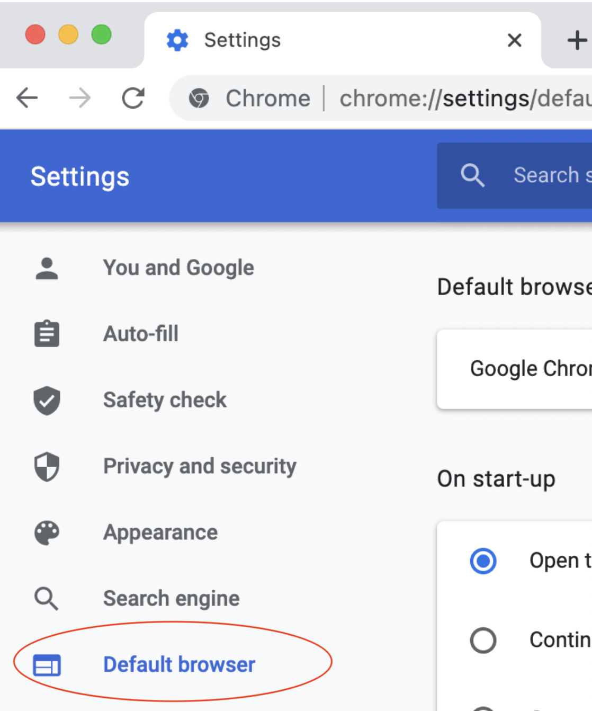
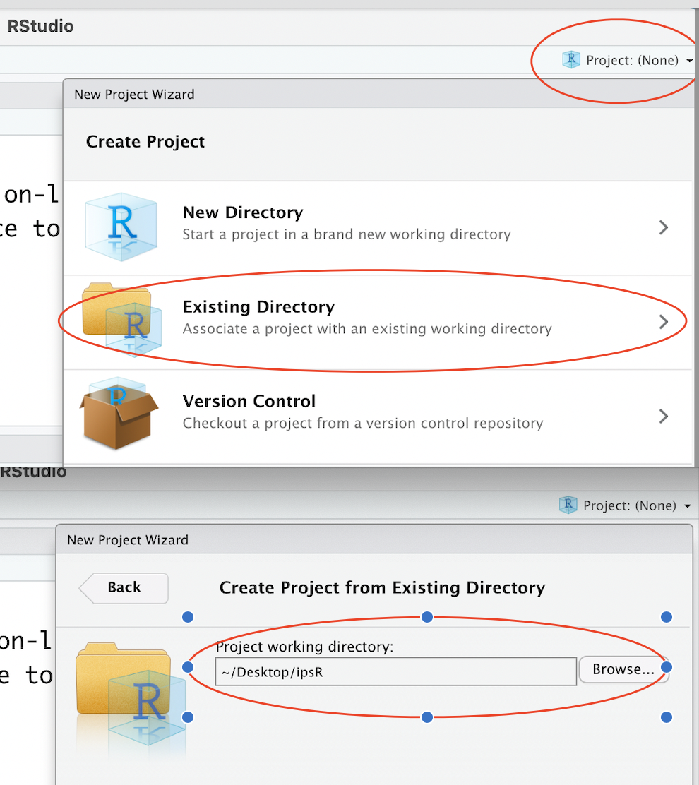
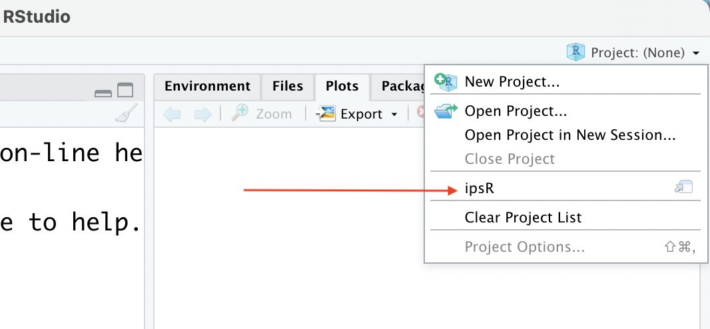
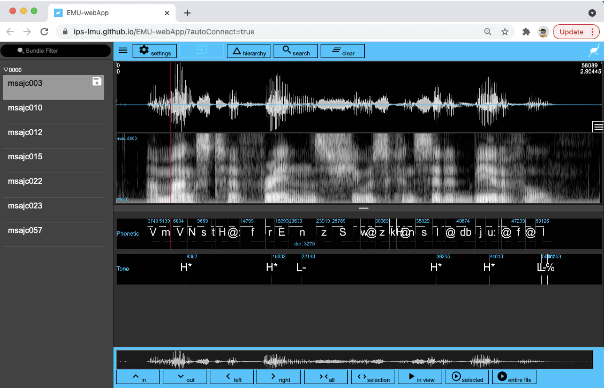

dir.create('C:/users/Rasmus/desktop/ipsR')Initial setup
Required set up for the course on emuR
- In order to use
emuR, you must first download and install the program R. The latest version is currently4.3.x(September 2023). - Also download and install the program RStudio, which is a so-called integrated development environment that makes working with R much much easier.
Default browser
The EMU-webApp for visualizing sound files and editing transcriptions should in theory work with most modern browsers, but you may run into unexpected problems if you use it with other browsers than Google Chrome. For this reason, we recommend that you change your standard browser to ensure that the EMU-webApp is opened in Chrome.
If you install Chrome, you can do this from the Settings tab as shown below:

Start up RStudio
Start RStudio by clicking on the RStudio icon – it should look like this:

Create a directory on your hard drive
Create a directory on your hard drive to be used on this course. You can do this from R. What exactly to call the directory will depend on your computer – this will create a directory called ipsR on the desktop of my machine (which runs Windows):
If I was a Mac user, I would have done it like this:
dir.create('/Users/Rasmus/Desktop/ipsR')Alternatively you can just create a directory in the usual way – e.g. by right clicking anywhere on your desktop and selecting New directory or similar.
Create a project
In RStudio, go to File > New Project.... Choose the directory you just created. See the figure below:

You only need to create the project once. When you start up RStudio the next time, the system should automatically open up inside this project that you created. If not, or if you closed the project, you can open it again:

You can get back to your default directory (if you were using R before then) any time by selecting Close project in the above menu.
Install packages
In the RStudio console window, run the following code to install packages needed for this course. It will take a few minutes. You only need to do this once.
install.packages(c("Rcpp", "remotes", "knitr",
"tidyverse", "magrittr",
"rmarkdown", "emuR", "gridExtra",
"broom", "pbkrtest", "wrassp"))
More information: Installation of R packages
Should the above result in the error message installation of package had non-zero exit status, then it means that installation has failed. For Windows, you might then additionally have to install Rtools. For iOS you might need to install/reset the XCode command-line tools. For this purpose, you can call the following code in the R console:
system("xcode-select --install")If the installation of R packages still does not work, call the following code:
system("xcode-select --reset")
The
emuhelpeR package
Throughout the book there will be some tips on how to ease your work with emuR by using the functions of another package, emuhelpeR. This package is work-in-progress and the functions have not been tested thoroughly like those of emuR, and it’s not a requirement to use it. Because it’s work-in-progress, it is not (yet) available from the Comprehensive R Archive Network or CRAN, and can’t be installed with the install.packages() command. You can however install it from GitHub using the install_github() command from the devtools package.
install.packages("devtools")
devtools::install_github("rpuggaardrode/emuhelpeR")Loading libraries
Load in the emuR library like so:
library(emuR)Verify that everything works by entering the following commands to the console. The command create_emuRdemoData() downloads a demo database, and load_emuDB() loads in the database, in this case saving it as the object ae.
create_emuRdemoData(dir = tempdir())
ae <- load_emuDB(file.path(tempdir(), "emuR_demoData", "ae_emuDB"))
serve(ae, useViewer=F)The third command serve(ae, useViewer=F) should produce the following view in your browser:

Have a look around and close the window to move on.
Quitting from RStudio (and R)
You shut down RStudio by either clicking Session > Quit Session in the main Rstudio toolbar or by running q() in the R console:
q()You will then be asked whether you want to save the workspace image. For working through the materials in this tutorial, you shouldn’t save the workspace image – i.e. (Don't save).
Learning R
A basic knowledge in R is a prerequisite for this tutorial. If you are unfamiliar with R then please start by working through these two sources:
- A short introduction to R by Raphael Winkelmann (in English)
- A more detailed introduction to R and the
tidyversepackage by Johanna Cronenberg in German or English
There is a very large and helpful R community online that will make learning R easier for you. Here are a few useful links and commands in case you get stuck:
- Stack Overflow: A blog where you can often find an answer to your questions about R. The easiest way is to do an internet search of your question in English; a Stack Overflow member’s answer is usually included in the first search results.
- The book R for Data Science (Wickham, Çetinkaya-Rundel, and Grolemund 2023): Hadley Wickham is the chief programmer of the
tidyverse. His books are very readable, well-structured, and entertaining. - Cheat sheets: These are PDFs that provide an overview of functions with explanations and examples in a very compact form. You will find some cheat sheets in the main RStudio toolbar via
Help>Cheat Sheets. The first three are especially useful. - Vignettes: For some packages there are so-called vignettes available. These are mostly HTMLs or PDFs that have been written by the package authors. You can search for vignettes using the following input to the console (this example finds a vignette for
dplyr, one of the libraries fromtidyverse):
vignette("dplyr")- You can get information about a function by entering its name in the RStudio
Helptoolbar. You’ll then get information about the function’s arguments and often some examples. You can also get help via the console by typing a question mark followed by the function name, as follows (e.g. here forgetwd()):
?getwd
help("getwd")R is first and foremost an environment developed for statistical computing. If you need more information about using statistics in R, the following are recommended:
- Winter (2019) is a recent book with excellent explanations to all major themes in inferential statistics.
- Gries (2021) is a recent update of a classic which gives a methodical introduction to both R data structures and statistical models, starting with the very basics. It is useful for decision making about which model to use for which kind of question.
- Sonderegger (2023) is a very recent book which introduces regression models and discusses in depth which problems you may run into when fitting them.
- Although the R code in Baayen (2008) is a bit out of date, the explanations and examples of statistics foundations are very helpful.
Based on personal experience, we cannot recommend using large language models like ChatGPT to fix or explain R functions. Current versions of these models make many mistakes which can be difficult to solve without a solid understanding of R.
Having trouble?
If you run into trouble with emuR, e.g. something doesn’t seem to be working like it’s supposed to and you’re fairly confident that the mistake isn’t yours, we strongly encourage you to alert the developers to this. You can do this via the issue tracker on GitHub. If you do so, please include as much information as possible, ideally providing a so-called reproducible example of code that produces the error.
Baayen, R. Harald. 2008. Analyzing Linguistic Data. A Practical Introduction to Statistics Using r. Cambridge: Cambridge University Press. https://doi.org/10.1017/CBO9780511801686.
Gries, Stefan Th. 2021. Statistics for Linguistics with r. A Practical Introduction. 3rd ed. Berlin & Boston: De Gruyter Mouton. https://doi.org/10.1515/9783110718256.
Sonderegger, Morgan. 2023. Regression Modeling for Linguistic Data. Cambridge, MA: MIT Press.
Wickham, Hadley, Mine Çetinkaya-Rundel, and Garrett Grolemund. 2023. R for Data Science. Import, Tidy, Transform, Visualize, and Model Data. 2nd ed. Sebastopol, CA: O’Reilly Media.
Winter, Bodo. 2019. Statistics for Linguists. An Introduction Using r. New York & London: Routledge. https://doi.org/10.4324/9781315165547.